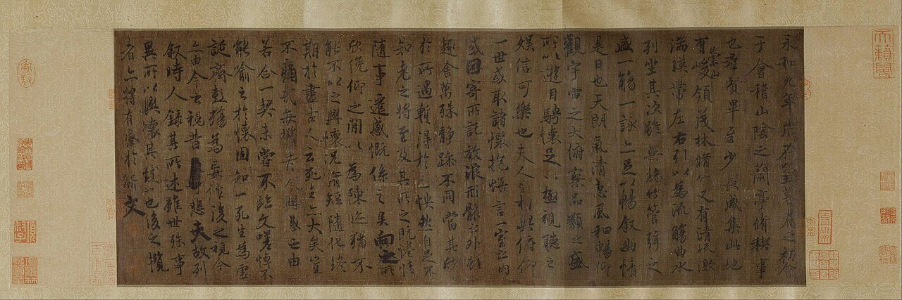
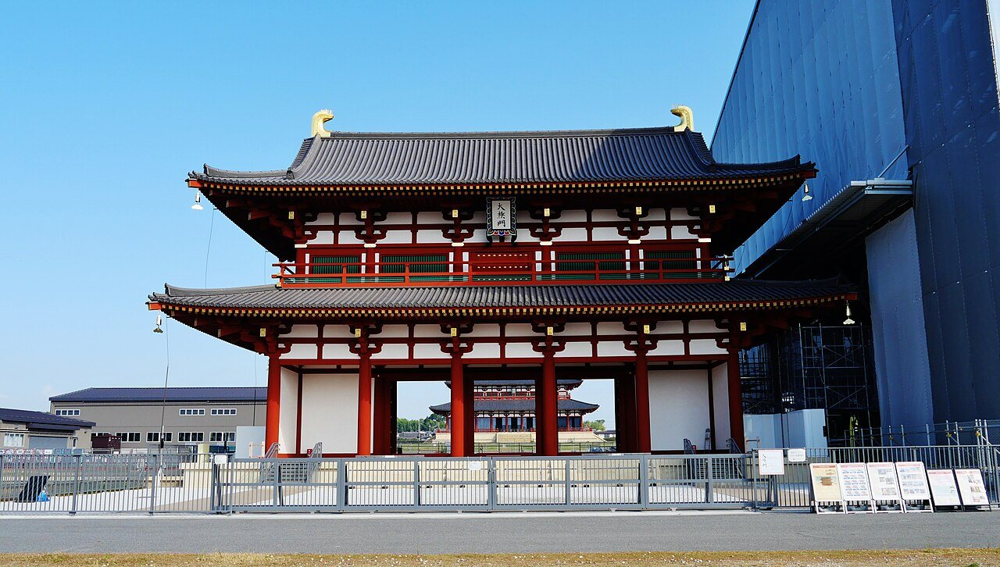
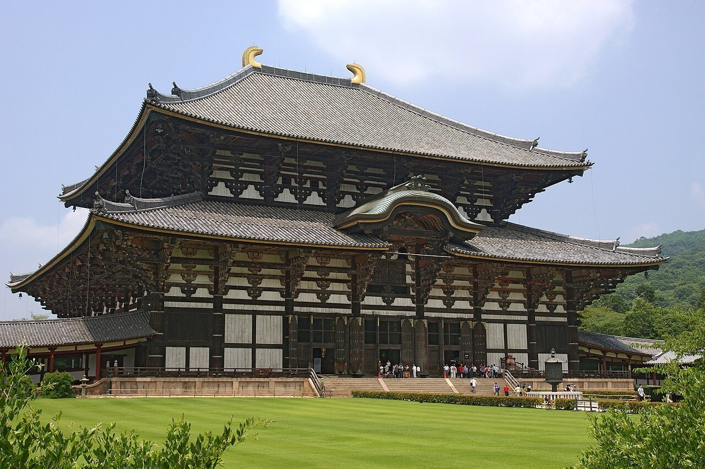
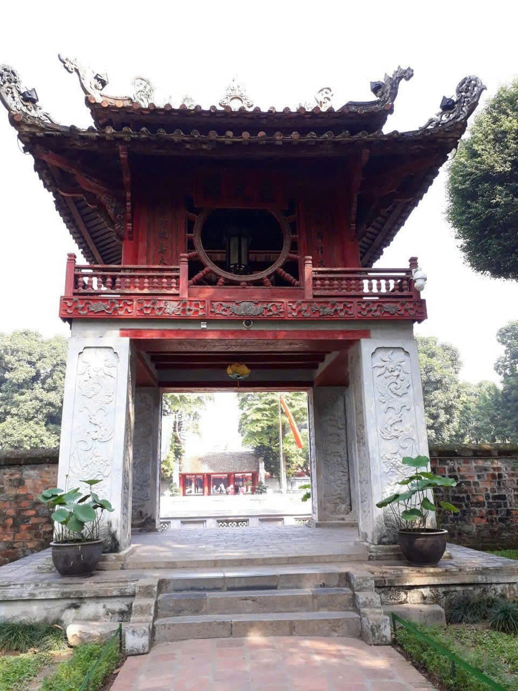

사진 · 왕희지 난정서 당대 모사본
중학교 역사① · 3단원 세계 종교의 확산과 지역 문화의 발전
한자동아시아 문화: 한자·율령·불교·유교
왕희지 「난정서」 당나라 때 모사본 · 베이징 고궁박물원 · 퍼블릭 도메인
“말이 다른 사람들이
말이 다른 사람들이
무엇을 함께 나누었을까?
사실한자 · 율령 · 불교 · 유교
해석말은 달라도 글로 통한다
확장나라마다 어떻게 바꾸어 썼을까
한자글
율령법과 제도
불교믿음
유교윤리와 정치

사진 · 어디서 많이 본
도시 설계?
어디서 많이 본
도시 설계?
사실일본 나라의 헤이조쿄
해석장안을 본뜬 바둑판 도시
확장경주, 발해 상경도
헤이조쿄 주작문(복원) · 사진 Zairon · CC BY 4.0

사진 · 왜 이렇게 큰
불상과 절을 지었을까?
왜 이렇게 큰
불상과 절을 지었을까?
사실752년 대불 완성
해석부처의 힘으로 나라를 지키려고
확장지금 건물은 몇 번째일까
도다이지 대불전 · 사진 663highland · CC BY 2.5

사진 · 베트남에도
공자를 모신 곳이?
베트남에도
공자를 모신 곳이?
사실하노이 문묘, 1070년
해석유학을 가르친 국자감
확장과거 합격자의 이름을 새긴 비석
하노이 문묘 규문각 · 사진 Sai Gon Dep Lam · CC BY 4.0
같은 글자,
다른 말
사실이두·향찰, 가나, 쯔놈
해석한자를 빌려 제 말을 적다
확장받아들이며 바꾸기
담징이
금당 벽화를 그렸을까?
사실610년 담징이 일본에 건너가다
주장호류지 금당 벽화를 그렸다는 이야기
확장전설과 기록 가르기
함께 나눈 것, 따로 지킨 것
함께한자 · 불교 · 유교
따로말 · 옷 · 고유 신앙
바꾸어골품제 · 신도 · 가나
學校
한국학교
중국쉐샤오
일본갓코
내가 신라 사람이라면
무엇을 받아들일까?
하나는 받아들이고, 하나는 지킨다면
“동아시아 사람들이 함께 나눈 가장 중요한 것은 이다.